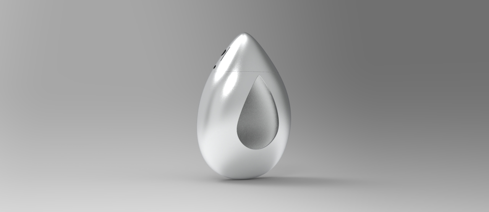
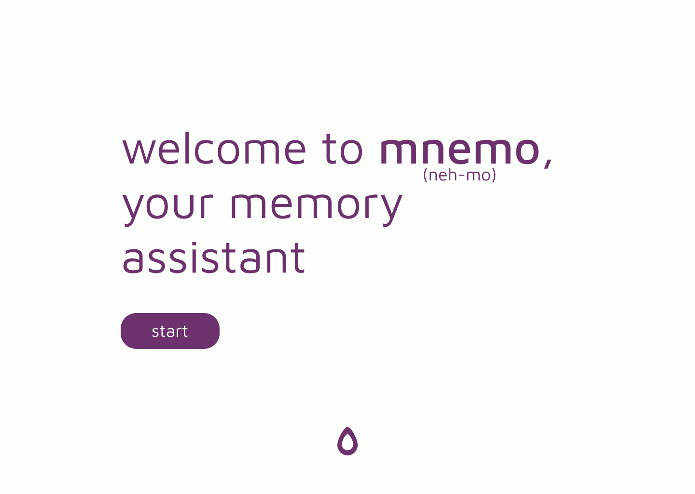

FALL 2024/SPRING 2025
MNEMO

WORK TYPEsolo
CONTEXTengineering capstone
TIME~160 hours
mnemo is a wearable multisensory snapshot device that allows
the user to capture experiences and utilizes design friction
to enable both memory offloading and encourage memory
recall.
in a 3-piece pendant assembly, mnemo uses various low-level sensor data, synthesized with APIs and machine learning models, to create “sensory snapshots.” such snapshots store visual and auditory data and are able to identify significance in location, weather, nearby monuments, and, using an artificial nose, even scents like fresh bread.
in a 3-piece pendant assembly, mnemo uses various low-level sensor data, synthesized with APIs and machine learning models, to create “sensory snapshots.” such snapshots store visual and auditory data and are able to identify significance in location, weather, nearby monuments, and, using an artificial nose, even scents like fresh bread.
WORK TYPEsolo
CONTEXT engineering capstone
TIME ~160 hours
mnemo is a wearable multisensory snapshot device that allows
the user to capture experiences and utilizes design friction to
enable both memory offloading and encourage memory recall.
in a 3-piece pendant assembly, mnemo uses various low-level sensor data, synthesized with APIs and machine learning models, to create “sensory snapshots.” such snapshots store visual and auditory data and are able to identify significance in location, weather, nearby monuments, and, using an artificial nose, even scents like fresh bread.
in a 3-piece pendant assembly, mnemo uses various low-level sensor data, synthesized with APIs and machine learning models, to create “sensory snapshots.” such snapshots store visual and auditory data and are able to identify significance in location, weather, nearby monuments, and, using an artificial nose, even scents like fresh bread.
> INSPIRATION
> EXAMPLE SNAPSHOT
> FORM
> ELECTRONICS
> SOFTWARE
> CHALLENGES
> PHOTOS
> ACKNOWLEDGE-
MENTS
MENTS
INSPIRATION
in all the noise, how do we remember?
we might take photos or videos on our smartphones, engaging in a form of memory offloading.
but these tools also remove the user from the present.
mnemo uses a clever sensor array to capture more dimensions of a memory as a seamless yet privacy-conscious companion to everyday memories.
we might take photos or videos on our smartphones, engaging in a form of memory offloading.
but these tools also remove the user from the present.
mnemo uses a clever sensor array to capture more dimensions of a memory as a seamless yet privacy-conscious companion to everyday memories.
EXAMPLE SNAPSHOT
data:
12/2/24 20:00:43 UTC
41.827, -71.412
3.33°C
45% RH
smell: ambient outdoors
↓
12/2/24 20:00:43 UTC
41.827, -71.412
3.33°C
45% RH
smell: ambient outdoors
↓
mnemo snapshot with
AI-assisted data conversion:
"
dec 2 2024, 3PM
providence, ri, usa
a group of Canada geese swim through the calm waters of the Woonasquatucket River at Waterplace Park, on a chilly evening with clear skies.
"
"
dec 2 2024, 3PM
providence, ri, usa
a group of Canada geese swim through the calm waters of the Woonasquatucket River at Waterplace Park, on a chilly evening with clear skies.
"
(explained):
"
dec 2 2024, 3PM (clock)
providence, ri, usa (GPS*)
a group of Canada geese swim through the calm waters (photo*) of the Woonasquatucket River at Waterplace Park (GPS*), on a chilly (temperature) evening with clear skies (photo*).
"
* data used as AI input
"
dec 2 2024, 3PM (clock)
providence, ri, usa (GPS*)
a group of Canada geese swim through the calm waters (photo*) of the Woonasquatucket River at Waterplace Park (GPS*), on a chilly (temperature) evening with clear skies (photo*).
"
* data used as AI input
FORM

starting with the concept of a wearable capture device, how does one arrive at a form seamless both in function and interaction? after considering other types of wearables such as watches, rings, and glasses, ultimately a pendant gives convenient and practical sensor placement and size, with one size for everyone.
design inspiration originated from ancient Islamic and 19th to 21st century pendants, especially pendant watches. some examples:
islamic silver pendant
attributed to Iran or Turkey
12th-13th century
metropolitan museum of art 1971.28
attributed to Iran or Turkey
12th-13th century
metropolitan museum of art 1971.28
belle époque pendant-watch
cartier
circa 1910
christie's, 2022
cartier
circa 1910
christie's, 2022
lacquer and diamond
demi-parure
wempe
no date
sotheby's, 2022
demi-parure
wempe
no date
sotheby's, 2022
pear-shaped pendant watch with sautoir
omega
circa 1975
sotheby's, 2019
omega
circa 1975
sotheby's, 2019

beginning with the minimum envelope of the individual parts,
prototypes built up to meet the concept inspiration.
critical prototype iterations focused on various aspects of design
including:
ASSEMBLY
built to be securely assembled, mnemo is assembled without glue or fasteners. the three parts are slotted into each other and secured with a pin across the pendant.
built to be securely assembled, mnemo is assembled without glue or fasteners. the three parts are slotted into each other and secured with a pin across the pendant.
WIRING
all components are layered to allow for ease and most compact wiring while allowing the gas sensors, LEDs, and camera to be front facing.
all components are layered to allow for ease and most compact wiring while allowing the gas sensors, LEDs, and camera to be front facing.
MANUFACTURING
instead of fdm or sla printing, the choice of metal sls printing in powder allows for the complex channels through the part to be manufactured as-is without supports and risk of collapse. traditionally, these might be added subtractively via machining, restricting the type of geometry allowed.
instead of fdm or sla printing, the choice of metal sls printing in powder allows for the complex channels through the part to be manufactured as-is without supports and risk of collapse. traditionally, these might be added subtractively via machining, restricting the type of geometry allowed.
MATERIALS
compared to plastics like PLA or resin, aluminum is still lightweight while being more durable, less brittle, and machinable if needed, and finishes nicely. the front window is kept clear for the camera, using a two-part epoxy which binds to the aluminum.
compared to plastics like PLA or resin, aluminum is still lightweight while being more durable, less brittle, and machinable if needed, and finishes nicely. the front window is kept clear for the camera, using a two-part epoxy which binds to the aluminum.
engineering drawings
all engineering CAD done in solidworks.
drawings strongly reference CAD, given complex geometry and
intended SLS manufacturing. master model can be found
here.
ELECTRONICS
in-pendant sensors are centralized around an
arduino nano 22 ble sense r2 with
onboard temperature and humidity. a
grove multichannel v2 gas sensor
collects 4-axis gas data. a "spy"
camera provides image data.
adafruit neopixel LED ring serves as
user feedback of snapshot state.
pendant sensor data is sent via bluetooth low energy to a
raspberry pi 5 with a
PA1616S GPS and
DS3231 real-time clock. depending on
interference and timing, the arduino and raspberry pi may not
always be able to find each other. in this case, the LED ring
wipes red. when a successful connection is made, the ring will
wipe blue until the data transmission and photo capture is
finished.

bluetooth success

bluetooth fail
SOFTWARE
the corresponding software package is a desktop app which provides
a user interface, including a grid view and timeline scrollbar to
view mnemo snapshots. the application also generates one-line
summaries using OpenAI's GPT-4o,
synthesizing the data to provide a memorable recap of the
snapshot.
the design philosophy was to create the simplest possible
interface, while having all information presented.

figma prototype
software built using electron and
react, allowing for compatibility with
macOS and Linux after repackaging.
flow for image retrieval after initial transfer
unlike a pure react application, the electron app interacts with
the local file system and OpenAI's chat completion API. this
requires custom electron protocols, both for file retrieval and
storage. this also allows for a distinct frontend and backend,
which communicate with each other securely.
code can be found here and .exe downloaded for windows here.
code can be found here and .exe downloaded for windows here.
CHALLENGES
HOUSING
the housing must open to allow the electronics to be inserted, then closed and secured. different manufacturing techniques and suppliers resulted in different tolerances, and with such small parts more attention must be paid to how they fit together. in this case, the parts are designed for manufacturing by aluminum SLS, which allows for more complex geometry. however, at large scale, they could be cast.
the housing must open to allow the electronics to be inserted, then closed and secured. different manufacturing techniques and suppliers resulted in different tolerances, and with such small parts more attention must be paid to how they fit together. in this case, the parts are designed for manufacturing by aluminum SLS, which allows for more complex geometry. however, at large scale, they could be cast.
HARDWARE
sometimes, not everything is plug-and-play. CAP1188 and AT42QT1010 touch breakouts were used before settling on the AT42QT1070, which has the least accidental capacitive triggers from EMI. even still, a debounce was added in the sensor code to prevent re-triggering from the same touch. with additional time, a housing would be designed for the raspberry pi and GPS module, which performs best with line of sight of the sky.
sometimes, not everything is plug-and-play. CAP1188 and AT42QT1010 touch breakouts were used before settling on the AT42QT1070, which has the least accidental capacitive triggers from EMI. even still, a debounce was added in the sensor code to prevent re-triggering from the same touch. with additional time, a housing would be designed for the raspberry pi and GPS module, which performs best with line of sight of the sky.
SOFTWARE
manual transfer, typically via ssh over wifi, is required to transfer files from the raspberry pi to the machine with the desktop application. with more time, a web server could be created to allow the data to be uploaded from the pi directly over wifi. the desktop software would then retrieve the data, with user authentication for multiple users.
manual transfer, typically via ssh over wifi, is required to transfer files from the raspberry pi to the machine with the desktop application. with more time, a web server could be created to allow the data to be uploaded from the pi directly over wifi. the desktop software would then retrieve the data, with user authentication for multiple users.

current file flow vs. theoretical flow with web server (blue)
mnemo was a challenge not only in hardware and software
development, but integration.
if done again, perhaps a different approach would be taken with the housing design to avoid the front seam, or different software infrastructure design. various levels of translation are needed between different data sources, platforms, and languages. of course, the ability to develop more and more hardware in house could reduce the amount of translation needed compared to off-the-shelf components.
if done again, perhaps a different approach would be taken with the housing design to avoid the front seam, or different software infrastructure design. various levels of translation are needed between different data sources, platforms, and languages. of course, the ability to develop more and more hardware in house could reduce the amount of translation needed compared to off-the-shelf components.
PRODUCT PHOTOS


ACKNOWLEDGEMENTS
mnemo is inspired by the work of
sophia brueckner, particularly
embodisuit
and
empathy amulet,
benjamin cabé's artificial nose, and supersense's smell memory kit, among others.
benjamin cabé's artificial nose, and supersense's smell memory kit, among others.
thanks to:
Mike Donohue, capstone advisor
Jamie Carroll and the Brown Joint Engineering and Physics Instrument Shop,
Daniel Stupar for fabrication tips
Brown Design Workshop, School of Engineering, Visual Arts Department,
Creative Arts and Technology Spaces for fabrication facilities
Eric Ewing, Louise Manfredi for brainstorming help
Mike Donohue, capstone advisor
Jamie Carroll and the Brown Joint Engineering and Physics Instrument Shop,
Daniel Stupar for fabrication tips
Brown Design Workshop, School of Engineering, Visual Arts Department,
Creative Arts and Technology Spaces for fabrication facilities
Eric Ewing, Louise Manfredi for brainstorming help
funded by:
Brown School of Engineering Hazeltine Grant, with special thanks to Barrett Hazeltine
Brown Arts Institute Student Grant
Brown School of Engineering Hazeltine Grant, with special thanks to Barrett Hazeltine
Brown Arts Institute Student Grant